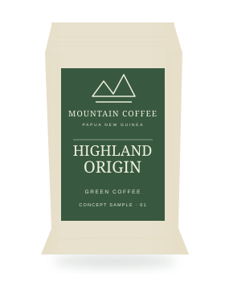
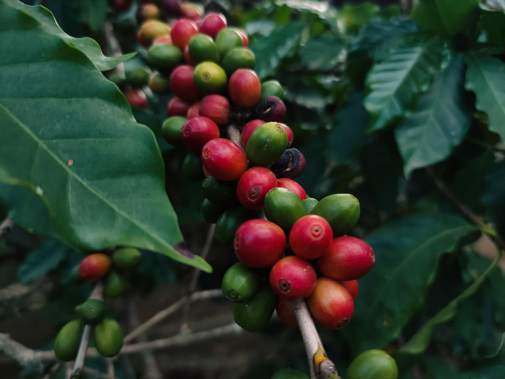
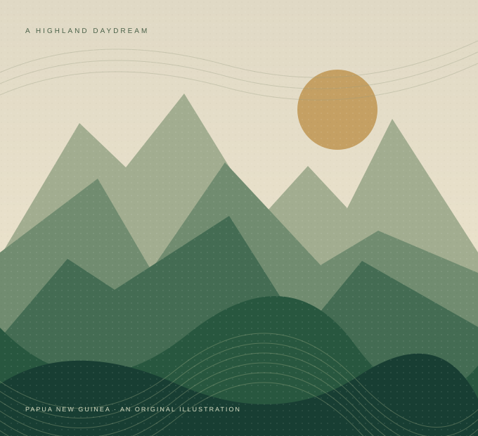
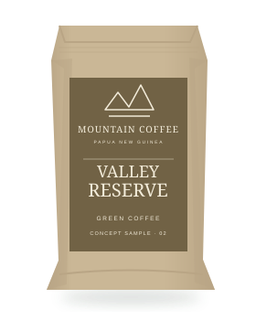
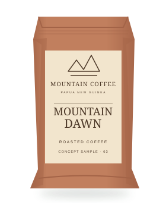
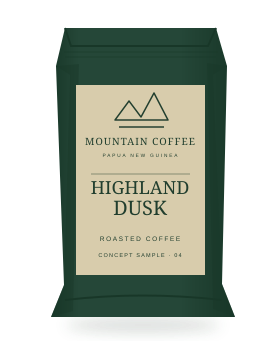
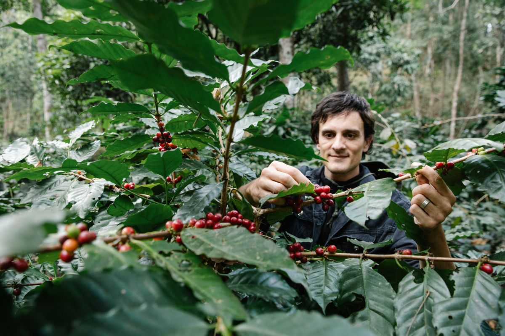
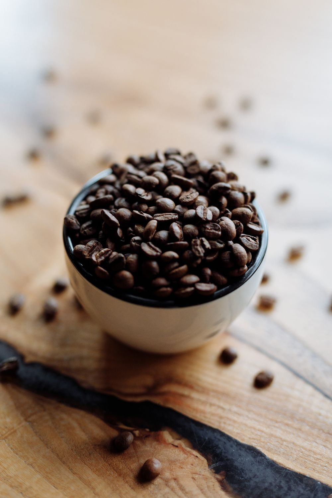

GREEN COFFEE

Highland Origin
Cocoa · citrus · gentle sweetness
A balanced starting point for roasters who like to make an origin their own.
Explore a sample of Highland OriginA taste of Papua New Guinea
A place worth discovering. A coffee worth sharing.
Explore green and roasted coffee, inspired by the heart of Papua New Guinea.


01 — Our story
Mountain Coffee begins with an idea: bring the character of Papua New Guinea to the people who care about what is in their cup.
Our imagined export business connects a love of origin with the needs of roasters, importers, and coffee shops. From green beans ready for your own roast to thoughtfully imagined house blends, every offering starts a conversation.
Explore our approachA fictional brand, created for the ISO229 student project. Product descriptions and sourcing scenarios are illustrative.
02 — The collection
For your roastery. For your shelves. For your next discovery. Meet our four concept coffees.

Cocoa · citrus · gentle sweetness
A balanced starting point for roasters who like to make an origin their own.
Explore a sample of Highland Origin
Red fruit · honey · soft spice
An expressive concept for curious roasters looking for a fruit-forward profile.
Explore a sample of Valley Reserve
Milk chocolate · caramel · orange
An easygoing everyday concept, imagined for filter brews and slow mornings.
Explore a sample of Mountain Dawn
Dark chocolate · toasted nut · spice
A fuller-bodied espresso concept with a comforting, lingering finish.
Explore a sample of Highland DuskAn illustrative collection. Tasting notes, processing methods, and packaging are design concepts, not verified lots or products for sale.
03 — A considered approach
Knowing a coffee means looking beyond the label. These are the principles behind our imagined sourcing model.
Ask where the coffee comes from, how it was processed, and whose work brought it to life.
Put clear communication and thoughtful relationships at the centre of buying conversations.
Start with samples. Explore the profile, find the right roast, and decide what suits your customers.

04 — From origin to opportunity
A simple introduction to how an export partnership could begin. This is an illustrative process for our fictional business.
Share your destination, the coffee you are interested in, and what you have in mind.
In a real partnership, you would evaluate samples and discuss your preferred profile.
Agree on availability, quantities, packaging, pricing, and destination requirements.
Confirm the shipping terms and documentation before any order moves forward.
05 — A little more to know
Some answers to get you started.
Our concept collection includes two green coffees for roasters and two roasted coffees for retailers and hospitality buyers. All four are illustrative products for this student project.
No. Mountain Coffee is an imaginary company. You can try the sample-request form, but it does not send an enquiry, create an order, or arrange a delivery.
There are no actual prices, minimum orders, or available stock. For a real export enquiry, these would be agreed after discussing the coffee, packaging, order size, and destination.
No certifications, named supplier relationships, or traceability claims are made. The collection and sourcing approach are fictional; photography is representative and does not depict our own farms.
The form checks your entries in your browser and displays a demo confirmation. It does not transmit, save, or store your entries. Please use example details rather than personal information.
06 — Let's start a conversation
Green beans for your next roast, or a finished coffee for your shelves. Tell us what you would like to explore.
This is a demonstration form. Use example details. Nothing is sent or stored, and no samples will be dispatched.
